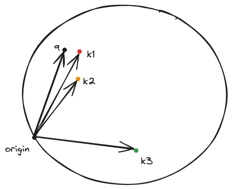
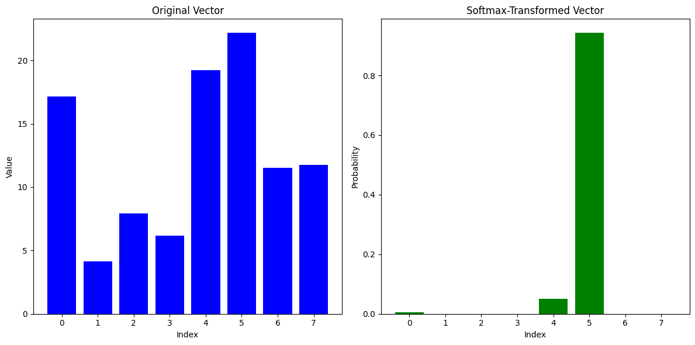
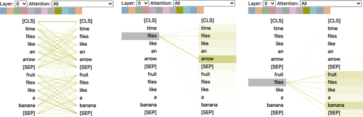
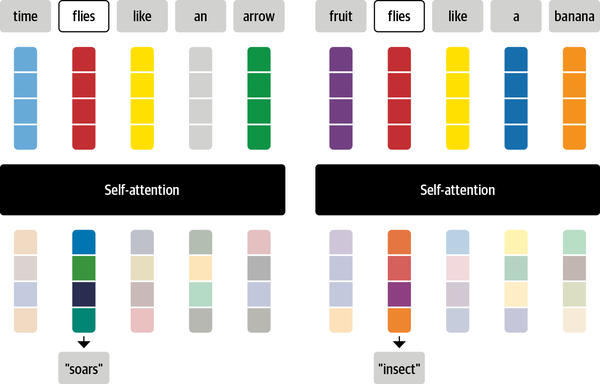

Single-head self-attention#
Scaled dot-product self-attention#
In the simple attention mechanism we have no trainable parameters, leaving the bulk of the effort in representation learning to the embedding layer. The attention weights are computed derministically from these embeddings of each token of the input sequence. The way to introduce trainable parameters is via the reuse of the principles we have seen in RNN attention mechanisms.
In RNN encoder-decoder architecture, the current decoder state served as a query and the encoder states \(h_i\) serve as keys and the contents of the hidden state as values. The attention weights are computed by comparing the query against each of the keys and passing the results via a softmax. The values are then used to create a weighted sum of the encoder hidden states to obtain the new decoder state ie. a vector that incorporates all the encoder hidden states.
In the transformer architecture we do something similar.
Linear transformation of the input embeddings#
This is done by multiplying the input embeddings with a corresponding matrix \(W\). We have three such matrices \(W^q, W^k, W^v\) and their role is essential.
where \(X\) is the input embedding matrix of size \(T \times d\) where \(T\) is the input sequence length and \(d\) is the embedding dimension. \(Q, K, V\) are the query, keys and values respectively and the dimensions of the \(W^q, W^k, W^v\) matrices are \(d \times d_k, d \times d_k, d \times d_v\) respectively. There is a reason why the queries and keys are projected to the same dimension \(d_k\) and the values to a different dimension \(d_v\).
Think about the query as the representation of what the current token is seeking to find and the key as the representation of the token identity. Each token emmits these two vectors - for example ‘I am key=vowel and I am looking for a query=consonant’. The attention mechanism will be able after training to reveal the keys of the input sequence that can best respond to the query.
Let us now recall what we saw already during the word2vec construction: we trained a network that will take one-hot vectors of semantically similar tokens that were orthonormal and projected them to vectors that are close to each other in the embedding space. So we have seen evidence that a projection matrix with proper weights can cause all sorts of interesting things to happen. By analogy, the multiplication of the matrix \(W^q\) with the input token will create a vector (a point) in the d_k dimensional space that will represent the query. Similarly the multiplication of the matrix \(W^k\) with each and every input tokens will create a vector (a point) in the d_k dimensional space that will represent the keys. After training the keys that can best respond to the query will end up close to it.
Computation of the attention scores#
Now that we have projected the tokens in their new space we can form the generalized dot product
where q is the query vector and k is the key vector and \(W\) is the product of the two spaces \(W^q\) and \(W^k\).
Geometrically you can visualize this as shown below:
 After training the keys that can best respond to the query will end up close to it.
The direct consequence of this positioning in the \(W\) vector space is that the dot product between the query and the nearby keys will be much larger than other far away keys.
Scaling#
We then divide the result by the square root of the dimension of the key vector (\(d_k\)). This is done in to prevent the softmax from saturating on the higher attention score elements and severely attenuating the attention weights that correspond to the lower attention scores.
We can do an experiment to see the bahavior of softmax.
import numpy as np
# Creating an 8-element numpy vector with random gaussian values
vector = np.random.randn(8)
# Softmax function
def softmax(x):
e_x = np.exp(x - np.max(x)) # Stability improvement by subtracting the max
return e_x / e_x.sum()
# Applying softmax to the vector
softmax_vector = softmax(vector)
softmax_vector
Lets plot the two results - the first case is when for the original vector and the second case is when the original vector is elementwise multiplied by 100.


Multiply the attention scores by 100 and then pass them through a softmax. You will see that the softmax will output a vector of values that are either very close to 0 or 1.
The division by the \(\sqrt{d_k}\) prevents this behavior.
The code for the scaled dot product attention is shown below.
def scaled_dot_product_attention(query, key, value):
dim_k = query.size(-1)
scores = torch.bmm(query, key.transpose(1, 2)) / sqrt(dim_k)
weights = F.softmax(scores, dim=-1)
return torch.bmm(weights, value)
Masking#
When we decode we do not want to use the attention scores of the future tokens since we dont want to train the tranformer using ground truth that will simply wont be available during inference since we need to preserve causality when we predict the next token during decoding.
To prevent this from happening we mask the attention scores of the future tokens by setting them to \(-\infty\) before passing them through the softmax. This will cause the softmax to output a vector of values that are very close to 0 for the future tokens.
Softmax#
We then pass the attention scores through a softmax function to obtain the attention weights \(\alpha_{ij}\) for each of the \(i\) tokens.
Weighting the values#
We then use the attention weights to create a weighted sum of each of the value to obtain the new input embedding.
where \(\alpha_{ij}\) is the attention weight of the \(j-th\) token of the input sequence for the \(i-th\) value of the input sequence of length T.
Why purpose the values play thouugh and why the \(W^v\) matrix ?
The values are the actual information that the input token will use to update its embedding. The \(W^v\) matrix is used to project the input tokens to values (points) in a \(d_v\) dimensional space. As an example, if the key represented the consonantness of the input token that responded to a ‘vowel’ query, the value will represent the specific conconant. Its a way to separate the information that the input token will use to update its embedding from the information that the input token will use to update the embeddings of the other tokens. In addition, there is no reason to make the dimensionality of the value space the same as the dimensionality of the key space.
 Note that masking is not shown in this figure. Also vector subspaces maintain the same dimensions throughout.
Note that masking is not shown in this figure. Also vector subspaces maintain the same dimensions throughout.
Closing, the overall equation for the scaled self-attention can be formulated as:
and the dimensions of the tensors can also be extended to accommodate the batch dimension.
Example#
An example of the output of the scaled dot-product self-attention is shown below using the bertviz library.
from bertviz import head_view
from transformers import AutoModel
model = AutoModel.from_pretrained(model_ckpt, output_attentions=True)
sentence_a = "time flies like an arrow"
sentence_b = "fruit flies like a banana"
viz_inputs = tokenizer(sentence_a, sentence_b, return_tensors='pt')
attention = model(**viz_inputs).attentions
sentence_b_start = (viz_inputs.token_type_ids == 0).sum(dim=1)
tokens = tokenizer.convert_ids_to_tokens(viz_inputs.input_ids[0])
head_view(attention, tokens, sentence_b_start, heads=[8])

This visualization shows the attention weights as lines connecting the token whose embedding is getting updated (left) with every word that is being attended to (right). The intensity of the lines indicates the strength of the attention weights, with dark lines representing values close to 1, and faint lines representing values close to 0.
The end result is that the token ‘flies’ will receive the context of ‘soars’ in one sentence and the context of ‘insect’ in the other sentence.
